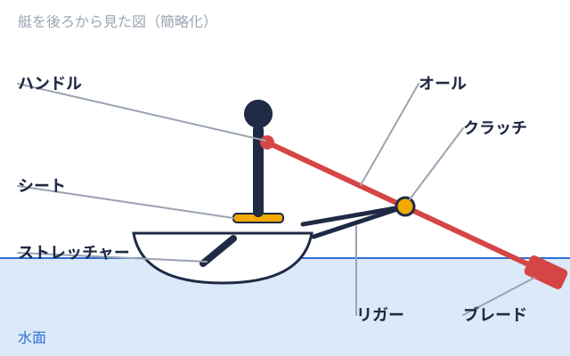

練習・用具 2026-11-09
漕艇のシェル艇の手入れ方法｜大学ボート部が練習後・保管時に押さえたいポイント
はじめての方向け
大学ボート部（漕艇部）に入ると、最初に任されることのひとつが艇の洗艇や片付けです。シェル艇速さを追求した、細く薄い船体の競技用の艇。安定しにくく、おもに経験者が乗る。（競技用の細長いボート）は、1艇で数百万円規模になる場合もある高価な用具で、部員全員で使い続ける共有財産です。ところが、艇の手入れは「先輩に教わって覚えるもの」として扱われやすく、なぜその手順なのかを説明した日本語の資料は多くありません。本記事では、国内外の艇メーカーやクラブが公開している手入れの情報をもとに、練習後に毎回行う手入れ、保管の考え方、オールの扱い、点検のポイントを整理します。
なお、艇の素材・型式・艇庫艇やオールなどの用具を保管する建物。部の練習の拠点にもなる。の設備は大学ごとに異なります。この記事は一般的な考え方をまとめたもので、実際の手順は必ず所属する部の指導者・先輩、および艇の取扱説明書に従ってください。
なぜシェル艇の手入れが重要なのか
艇は高額で、買い替えのしやすさに限りがある
艇の価格は、取材記事で公開されている範囲でも相当な額です。広島大学ボート部を取材した記事では、艇は4人乗りで300万〜500万円、1人乗りでも100万円ほどと紹介されています（ツナカレ取材記事、2026年6月15日）。名古屋大学漕艇部を取材した記事でも、艇1艇の設備投資は約1000万円規模とされています（ツナカレ取材記事、2026年3月6日）。金額は艇種・新艇か中古かによって大きく変わりますが、簡単に買い替えられるものではないことは共通しています。購入や買い替えの費用感は大学ボート部の艇はいくらかかる？で、艇以外の用具費は用具にかかる費用の内訳で詳しく取り上げています。
こうした費用を部員の部費やOB会の支援、資金調達で賄っている部が多い以上、日々の手入れは「艇を長く使うための最も身近な節約」と言えます。
小さな汚れや傷みが、大きな修理につながる場合がある
艇メーカーのHUDSONの担当者は、ホイールやスライドに付いた砂やシルト、塩などの粒子が保護コーティングを傷つけ、早期の摩耗につながると説明しています（row2k）。また、シンガポールのローイング関連ページでは、艇を毎回すすぎ拭くことに加えて、週に1回はすすぎながら摩耗の有無を確認すると、小さな修理で済ませやすくなると紹介されています（ActiveSG Circle）。
練習後に毎回行う基本の手入れ
水で流し、水分を残さない
練習後の手入れの基本は、艇の表面と内側の汚れを落とし、水分を残さないことです。艇メーカーのElite Rowing/Filippiの担当者は、真水と食器用洗剤で洗うこと、特に海水や汽水で漕いだ後は念入りにすることを勧めています（row2k）。艇メーカーのPocockの担当者は、艇体の表面が最も重要な手入れ対象であり、強い成分を含まない艇用の洗剤で洗うよう述べています（同記事）。
オーストラリアの艇メーカー系ページでは、汚れがひどい場合は真水と洗剤で洗い、そのあと艇の内外をセーム革で拭いて、艇内に水が残らないようにする方法が紹介されています（Sykes）。日本の部でも、洗艇後に布で水気を拭き取る習慣があるのは、同じ考え方によるものと考えられます。
トラック・ホイール・スライドを掃除する
シート漕ぐ人が座る席。下に車輪があり、脚の動きに合わせて前後に動く。 
一方、Elite Rowing/Filippiの担当者は、ホイールに潤滑油を差すことは避けるよう述べています。プラスチックを劣化させる可能性があるためです（同記事）。「滑りが悪いから油を差す」という判断は、艇の素材によっては逆効果になる場合があるため、自己判断せず部の指導者に確認するのが安全です。
気になる傷や緩みは、その場で共有する
洗艇は艇全体を近くで見られる機会でもあります。ヒビ、へこみ、ナットやボルトの緩み、パーツの欠けなどに気づいたら、自分で直そうとせず、その場で先輩や担当者に伝えることが基本です。海外のクラブの利用規定には、艇を水に出す前にシート、リガー艇の外側に張り出した骨組み。オールを支える部品を取り付けている。、フットストレッチャーなどに欠けた部品・緩み・破損がないかを確認することを求めるものがあります（Hanlan Boat Club）。艇に不具合がある状態で水に出ることは、故障だけでなく事故のリスクも高めます。
保管の考え方：重さを分散し、水と紫外線を避ける
ラックやスリングで艇の重さを分散する
保管では、艇の一点に荷重がかからないようにすることが重要です。Maas Boatsのページは、艇を2本のパッド付きクロスアームやサドル、スリングで支えること、支持位置は艇の端から一定以上離すことを説明しています（Maas Boats）。ActiveSG Circleのページでは、リガーが壁や物に触れて圧力を受けると、リグのピッチ1分間に漕ぐ回数。数字が大きいほど速いペースで漕いでいる。（オールの角度）がずれ、オールが取り付けにくくなるため、リガーは何にも触れさせずに保管するよう述べています。また、修理が必要な艇はラックではなく、スリングに正位置で置いて保管し、スリングは艇と一緒に両手で持って動かすと紹介されています。
艇庫内の水分と紫外線に注意する
艇庫の中でも、水分と紫外線は劣化の原因になります。HUDSONの担当者は、冬季などに長期保管する際は、艇・コックピット・リガー・部品を洗って乾かし、通気用のキャップや密閉室を開けておくよう勧めています（row2k）。Maas Boatsのページは、屋外で保管する場合は艇を逆さにして異物が入らないようにし、艇とオールを日陰に置いて、明るい色の紫外線に強い布でカバーすることを勧めています。暗い色のカバーは熱がこもり、艇体を変形させる可能性があるとされています。
Pocockの担当者は、長年の日光や紫外線が艇を傷めるため、マリン用ワックスでの保護が有効であると述べています（row2k同記事）。ワックスを掛けるかどうかは艇の仕上げによって異なるため、部の方針と取扱説明書に従ってください。
長期保管前は、部品を緩めて外す
HUDSONの担当者は、長期保管の前にはリガーを外して別に保管すること、リガーの金具は分解して乾燥状態で保管すること、フットアセンブリやシートは暖かく乾いた場所に保管することを挙げています。あわせて、ピンボルトやフットストレッチャーの調整ボルトを緩めてから保管するよう勧めています（row2k同記事）。ただし、どこまで分解するかは艇のメーカーと型式で異なるため、部の経験者の指示を優先します。
金属部品・ナット・ボルトの点検
艇には多くの金属部品があり、水に濡れる環境のため、腐食や固着が起こりやすくなっています。Elite Rowing/Filippiの担当者は、ナットとボルトに腐食や固着がないかを確認し、必要に応じて交換するよう勧めています。海水で漕ぐ場合は、およそ3か月に一度、すべての留め具を分解して石けんと真水で洗うことが推奨されています。さらに、金属同士、あるいは金属とカーボンが接する箇所には、電食（異なる金属の接触で起こる腐食）を防ぐためにTefGelというペースト状の保護材を使う方法も紹介されています（row2k同記事）。
水に出る前の締め付けの確認も重要です。ActiveSG Circleのページは、リガーのナットとボルト、フットストレッチャーの金具が、指で締めた状態よりわずかに強く締まっているかを確認することを挙げ、これが水上での事故の可能性を大きく下げると述べています。逆に、強く締めすぎると破損の原因にもなるため、工具の使い方と締め付けの程度は必ず先輩から直接教わってください。
オールの扱い方と手入れ
艇だけでなく、オールも高価で壊れやすい用具です。ActiveSG Circleのページは、オールを運ぶときや桟橋に置くときは先端（ブレードオールの先にある、水に入って水をとらえる、平たい形をした部分。）を上に向け、オールや艇の部品を床に引きずらないことを挙げています。Concept2の解説では、オールはできればハンドルを上にしてラックに立てて保管し、ブレードを砂利やコンクリート、桟橋などの硬い面に擦らないこと、長期間の直射日光を避けることが勧められています（Concept2）。
グリップの手入れも大切です。ActiveSG Circleのページでは、木製のハンドルは固めのブラシと中性の石けん水で油や汚れを落とすこと、標準的なグリップは研磨性のないスポンジと水で洗うことが紹介されています。手のマメが気になる場合の考え方はボート部のマメ対策を参照してください。ハンドルやグリップが清潔であることは、手に負担をかけにくくすることにもつながります。
手入れの当番を円滑に回すための考え方
手順を言葉にして共有する
艇の手入れは、先輩から後輩へ口頭で引き継がれる部が多いと考えられます。名古屋大学漕艇部を取材した記事では、毎回の練習後にミーティングを行い、言葉で振り返って改善点を分解・共有していると紹介されています（ツナカレ取材記事）。艇の手入れも同じように、「洗う順番」「拭く場所」「片付けの向き」を部内で言葉にして共有しておくと、新入部員が迷いにくくなります。
新入部員への指導体制
大阪公立大学ボート部を取材した記事では、部員増加後の初心者指導体制を、大学院生コーチ陣が中心となって整備したと紹介されています（ツナカレ取材記事、2026年5月25日）。艇の扱いは初心者が最も戸惑う点のひとつであり、体験入部の段階で艇庫見学や用具の説明があるかどうかは、部を選ぶ際の確認項目のひとつになります。
手入れのチェックリスト
以下は、公開情報をもとに編集部が整理した目安です。艇や設備によって内容は変わります。
| タイミング | 確認したいこと |
|---|---|
| 乗艇艇に実際に乗り、水上で漕ぐこと。陸上でのトレーニングと区別して使う。前 | 部品の欠け・緩み・破損がないか。ナットやボルトが緩んでいないか |
| 練習後（毎回） | 真水で流し、艇の内外の水分を拭き取る。トラック・ホイール・スライドの砂を落とす |
| 練習後（毎回） | オールのブレードを硬い面に当てず、ハンドルを上にして置く |
| 週1回程度 | すすぎながら、傷・ヒビ・摩耗の有無を確認する |
| 保管時 | 艇の重さをラックやスリングで分散し、リガーを何にも触れさせない |
| 長期保管前 | 洗って乾かし、通気を確保。リガーや部品の扱いは取扱説明書と指導者に従う |
大学の戦績・用具費もあわせて確認する
艇の手入れに力を入れている部が、どのような成績を残しているかは、公開されている結果で確認できます。直近の大会結果は2025年度 全日本大学ローイング選手権の結果で種目別に確認でき、各大学の通算の戦績は大学別ページ一覧から調べられます。結果と手入れの質を単純に結びつけることはできませんが、部の活動の様子を知る材料にはなります。部の年間の流れは大学ボート部の1年間のスケジュールで紹介しています。
まとめ
シェル艇の手入れは、練習後に艇と部品の汚れや水分を残さないこと、保管時に艇の重さを分散させ、水と紫外線を避けること、乗艇前に部品の緩みや破損を確認すること、の3点に集約されます。艇は部員みんなで使う高価な共有財産であり、手入れの習慣は艇の寿命だけでなく、水上での安全にも関わります。
一方で、潤滑油の使用可否やワックスの要否、分解の範囲などは、艇の素材とメーカーによって異なります。迷ったときは、自己判断せずに指導者・先輩に確認し、取扱説明書の指示を優先してください。
出典
艇メーカー（Elite Rowing/Filippi、HUDSON、Pocock）の担当者の見解はrow2k「Ask the Boatmakers: Prolonging the Life of Your Fleet」、保管・輸送の考え方はMaas Boats、艇・オールの手入れはActiveSG Circle、Concept2、Sykesを参照しました。国内の艇価格や部の運営に関する記述は、ツナカレの学生団体取材記事（広島大学ボート部・名古屋大学漕艇部・大阪公立大学ボート部）の公開内容に基づきます。いずれも海外の事例や特定の艇メーカーの見解を含み、日本の大学の艇庫や特定の艇に当てはまるとは限りません。個人名は掲載していません。最新の大会情報は日本ローイング協会公式サイトをご確認ください。
この部活・競技を応援したい方へ
取材してほしい部活を募集中
オフシーズン・引退後に、長期インターンという選択
部活で培った力を実務で試す。16タイプ診断（30秒）で合う企業がわかります。